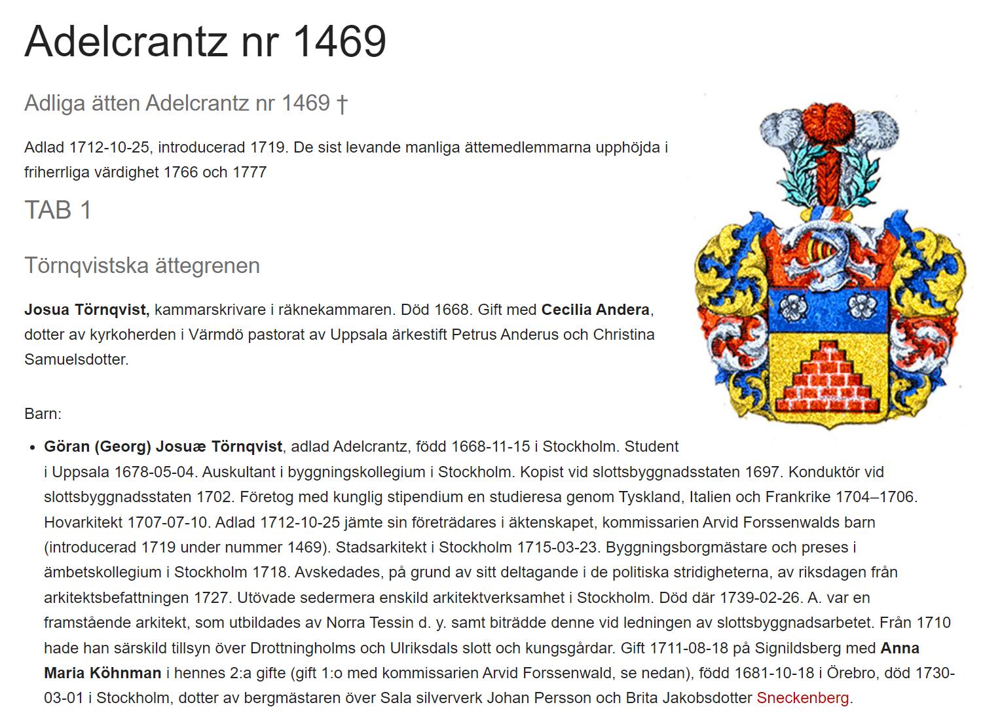
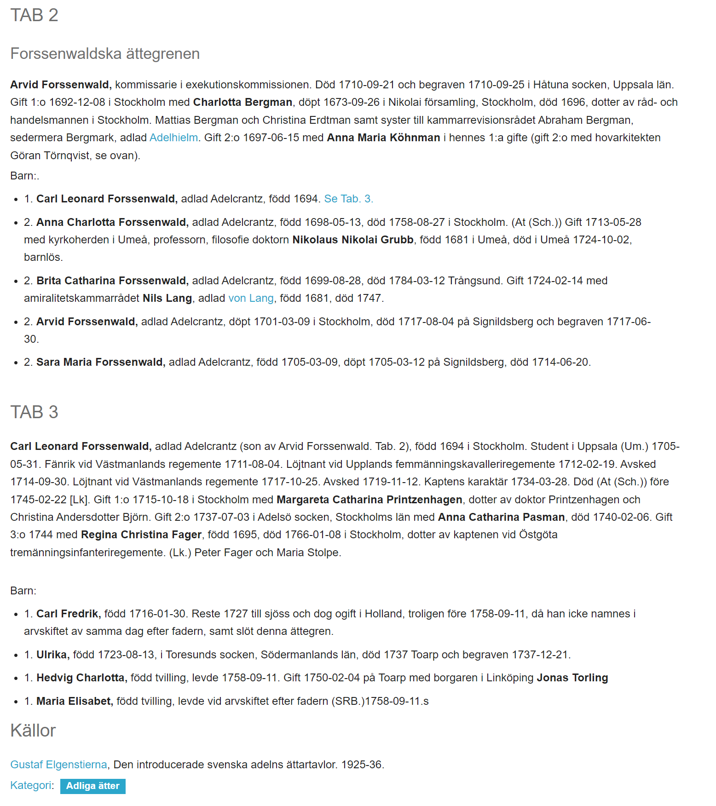
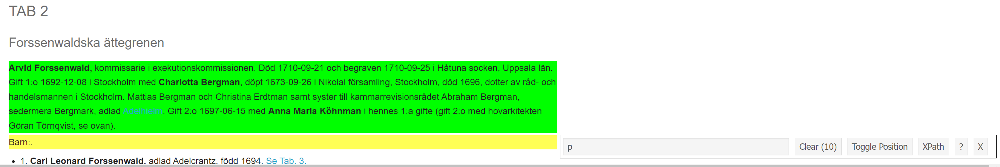
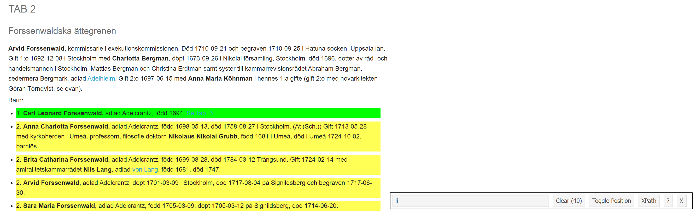

Web scraping tips
Tips for preserving structure when web scraping with rvest and xpath
Purpose
I have been helping a colleague collect some genealogical data from a website about Swedish noble families.
It involved a relatively complex web scraping problem due to the idiosyncratic nature of the web pages.
I enjoyed solving the problem, and thought I would share my solution here.
Problem
The website contains information about various branches of the Swedish noble families. For example, the page we will look at tells the history of the Adelcrantz family, who were designated nobility in 1719, and of the originator Josua Törnqvist, a chamber clerk who married Cecilia Andera, daughter of the vicar in Värmdö pastorate of Uppsala archdiocese, Petrus Anderus and Christina Samuelsdotter.
Further, we learn of the Forssenwald family branch, originated by Arvid Forssenwald, commissioner in the executive commission. Arvid had one child with first wife Charlotta Bergman, and four children with Anna Maria Köhnman.

The problem that we want to solve is how to preserve the structure of this information when we scrape the page. This is challenging, because the information that falls under each family branch is not of a uniform HTML class.
As I show in the two images below, the information about the originator of the family branch is a paragraph (<p> tag in HTML), while the bullet points about the children are list elements (<li>) of an unordered list (<ul>). If we were to grab all of the paragraph elements and list elements from the web page, there would be no way to recover the structure, with Carl Leonard being the first son of Arvid, and Göran the first son of Joshua.


I show this in the code chunk below that collects the paragraphs from the page.
library(tidyverse)
library(rvest)
library(gt)
# save url
url <- "https://www.adelsvapen.com/genealogi/Adelcrantz_nr_1469"
# read html
html <- read_html(url)
# get paragraphs
paragraphs <- html %>%
html_nodes("p") %>%
html_text2() %>%
str_squish() %>%
as_tibble() %>%
filter(!value %in% c("", "Barn:", "Barn:.")) %>%
rename(paragraph = value)
paragraphs %>%
gt() %>%
tab_header(title = md("**Example of paragraphs without structure**")) %>%
tab_options(column_labels.hidden = TRUE)| Example of paragraphs without structure |
| Adlad 1712-10-25, introducerad 1719. De sist levande manliga ättemedlemmarna upphöjda i friherrliga värdighet 1766 och 1777 |
| Josua Törnqvist, kammarskrivare i räknekammaren. Död 1668. Gift med Cecilia Andera, dotter av kyrkoherden i Värmdö pastorat av Uppsala ärkestift Petrus Anderus och Christina Samuelsdotter. |
| Arvid Forssenwald, kommissarie i exekutionskommissionen. Död 1710-09-21 och begraven 1710-09-25 i Håtuna socken, Uppsala län. Gift 1:o 1692-12-08 i Stockholm med Charlotta Bergman, döpt 1673-09-26 i Nikolai församling, Stockholm, död 1696, dotter av råd- och handelsmannen i Stockholm. Mattias Bergman och Christina Erdtman samt syster till kammarrevisionsrådet Abraham Bergman, sedermera Bergmark, adlad Adelhielm. Gift 2:o 1697-06-15 med Anna Maria Köhnman i hennes 1:a gifte (gift 2:o med hovarkitekten Göran Törnqvist, se ovan). |
| Carl Leonard Forssenwald, adlad Adelcrantz (son av Arvid Forssenwald. Tab. 2), född 1694 i Stockholm. Student i Uppsala (Um.) 1705-05-31. Fänrik vid Västmanlands regemente 1711-08-04. Löjtnant vid Upplands femmänningskavalleriregemente 1712-02-19. Avsked 1714-09-30. Löjtnant vid Västmanlands regemente 1717-10-25. Avsked 1719-11-12. Kaptens karaktär 1734-03-28. Död (At (Sch.)) före 1745-02-22 [Lk]. Gift 1:o 1715-10-18 i Stockholm med Margareta Catharina Printzenhagen, dotter av doktor Printzenhagen och Christina Andersdotter Björn. Gift 2:o 1737-07-03 i Adelsö socken, Stockholms län med Anna Catharina Pasman, död 1740-02-06. Gift 3:o 1744 med Regina Christina Fager, född 1695, död 1766-01-08 i Stockholm, dotter av kaptenen vid Östgöta tremänningsinfanteriregemente. (Lk.) Peter Fager och Maria Stolpe. |
| Gustaf Elgenstierna, Den introducerade svenska adelns ättartavlor. 1925-36. |